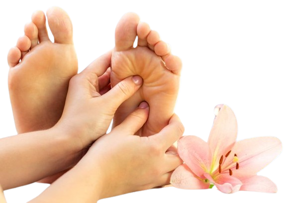

Can Reflexology Reduce Eczema Flare-Ups? Exploring the Potential Benefits

Introduction
Eczema, also known as atopic dermatitis, is a common skin condition that affects millions of people worldwide. Characterized by dry, itchy, and inflamed skin, eczema flare-ups can be triggered by various factors, including stress, allergens, and environmental conditions. While conventional treatments such as corticosteroids, antihistamines, and moisturizers provide relief, many individuals seek alternative therapies to complement traditional medicine. One such alternative approach is reflexology, a holistic practice that focuses on stimulating specific points on the feet, hands, and ears to promote healing and overall well-being.
In this article, we explore whether reflexology can effectively reduce eczema flare-ups. We will examine the science behind reflexology, its potential benefits for eczema sufferers, and how it can be integrated into a skincare routine for long-term management.
Understanding Reflexology
Reflexology is a therapeutic practice based on the principle that specific reflex points on the feet, hands, and ears correspond to different organs and systems in the body. By applying pressure to these reflex points, practitioners aim to stimulate circulation, release tension, and support the body’s natural healing processes.
The origins of reflexology can be traced back to ancient Egyptian, Chinese, and Indian traditions. In modern practice, reflexologists use maps of the body’s reflex points to guide their techniques, believing that stimulating these areas can improve overall health and well-being.
The Connection Between Reflexology and Eczema
Eczema is a complex condition influenced by genetic, immune, and environmental factors. Reflexology may help manage eczema symptoms in several ways:
- Stress Reduction
Stress is a known trigger for eczema flare-ups. When the body experiences stress, it releases cortisol, a hormone that can lead to inflammation and worsen skin conditions. Reflexology promotes relaxation by reducing stress levels, thereby potentially minimizing eczema flare-ups.
- Improved Circulation
Proper blood circulation is essential for delivering oxygen and nutrients to the skin while removing toxins. Reflexology enhances circulation, which may contribute to healthier skin and a reduction in eczema symptoms.
- Detoxification and Lymphatic Drainage
The lymphatic system plays a crucial role in immune function and toxin removal. Reflexology is believed to stimulate lymphatic drainage, helping the body eliminate toxins that may contribute to skin inflammation and irritation.
- Balancing the Immune System
Eczema is often associated with an overactive immune response. Reflexology is thought to promote balance within the immune system, potentially reducing hypersensitivity reactions that lead to eczema flare-ups.
- Hormonal Balance
Hormonal fluctuations can influence skin health. Reflexology may help regulate hormones by stimulating the endocrine system, leading to improved skin conditions and fewer eczema flare-ups.
Reflexology Techniques for Eczema Relief
If you are interested in using reflexology to manage eczema symptoms, here are some techniques that may help:
- Foot Reflexology
Foot reflexology involves applying pressure to specific points on the feet that correspond to different body areas. For eczema relief, focus on the following reflex points:
- Lungs: Supports the immune system and improves oxygenation.
- Liver: Aids in detoxification and reduces inflammation.
- Kidneys: Supports hydration and toxin elimination.
- Adrenal glands: Helps regulate stress hormones like cortisol.
- Hand Reflexology
Hand reflexology is a convenient option for self-care. Similar to foot reflexology, hand reflexology targets reflex points that correspond to body systems. Key areas to focus on include:
- Lymphatic system points to aid detoxification.
- Endocrine system points to regulate hormones.
- Skin-related points to promote healing.
- Ear Reflexology
Ear reflexology involves stimulating reflex points on the ears that correspond to different organs. For eczema relief, applying gentle pressure to the reflex points related to stress relief and detoxification may be beneficial.
Scientific Evidence on Reflexology and Eczema
While reflexology is widely used for relaxation and overall well-being, scientific research on its effectiveness for eczema remains limited. However, studies have shown that reflexology can reduce stress, improve circulation, and enhance immune function—factors that contribute to eczema management.
A study published in the Journal of Complementary Therapies in Clinical Practice found that reflexology significantly reduced stress levels in participants. Given that stress is a common eczema trigger, this suggests that reflexology may indirectly help manage eczema symptoms.
Another study in the International Journal of Nursing Studies demonstrated that reflexology improved circulation and immune function, which are critical factors in skin health and inflammation control.
Although more research is needed, anecdotal evidence and patient testimonials indicate that reflexology can be a valuable complementary therapy for eczema sufferers.
Integrating Reflexology into an Eczema Care Routine
For individuals looking to incorporate reflexology into their eczema management plan, here are some practical tips:
- Seek Professional Guidance
A certified reflexologist can provide tailored sessions and teach self-care techniques for managing eczema symptoms.
- Practice Self-Reflexology at Home
Regularly massaging reflex points on the feet, hands, or ears can support relaxation and skin health.
- Combine Reflexology with Other Holistic Approaches
Reflexology works best when combined with other natural eczema treatments, such as:
- A balanced diet rich in anti-inflammatory foods.
- Proper hydration to maintain skin moisture.
- Stress management techniques like yoga or meditation.
- Natural skincare products free from harsh chemicals.
- Monitor Progress
Keep a journal to track eczema flare-ups and reflexology sessions. This can help identify patterns and determine if reflexology is beneficial for your skin health.
Conclusion
While reflexology is not a cure for eczema, it offers a holistic approach to managing symptoms by reducing stress, improving circulation, and supporting immune function. Many eczema sufferers find relief through reflexology as part of an integrated care plan.
If you are considering reflexology for eczema relief, consult a qualified practitioner and monitor your skin’s response over time. As with any alternative therapy, individual results may vary, but with consistent practice, reflexology may contribute to healthier skin and fewer eczema flare-ups.
By embracing a holistic approach, including reflexology, diet, hydration, and stress management, individuals with eczema can work towards long-term relief and improved well-being.